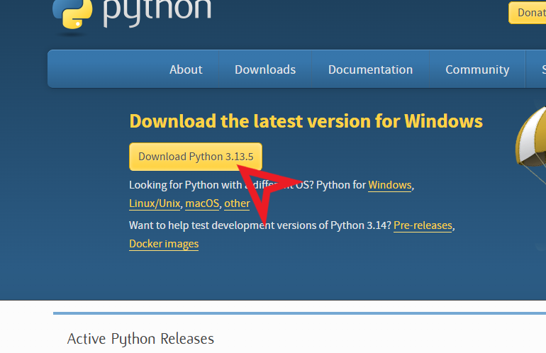
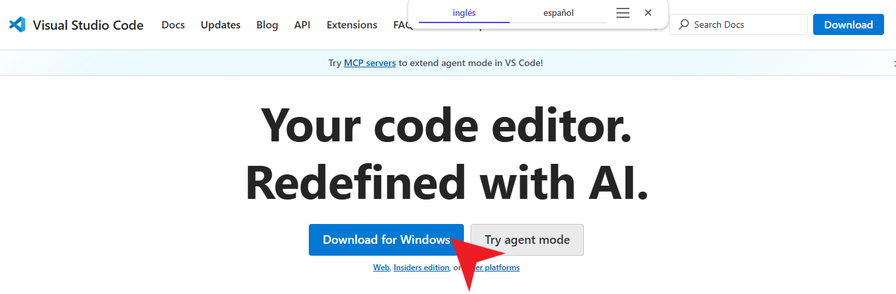
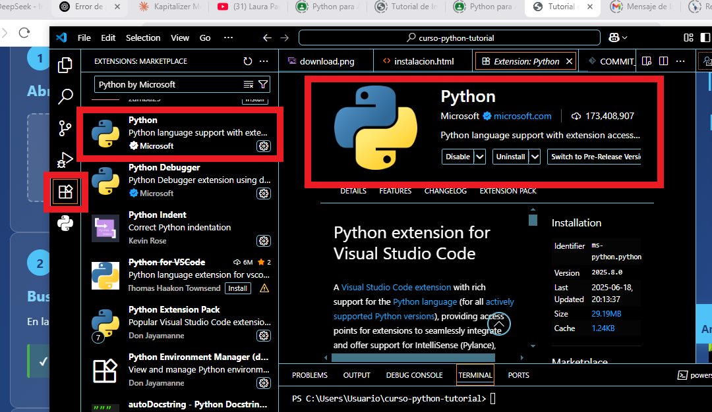
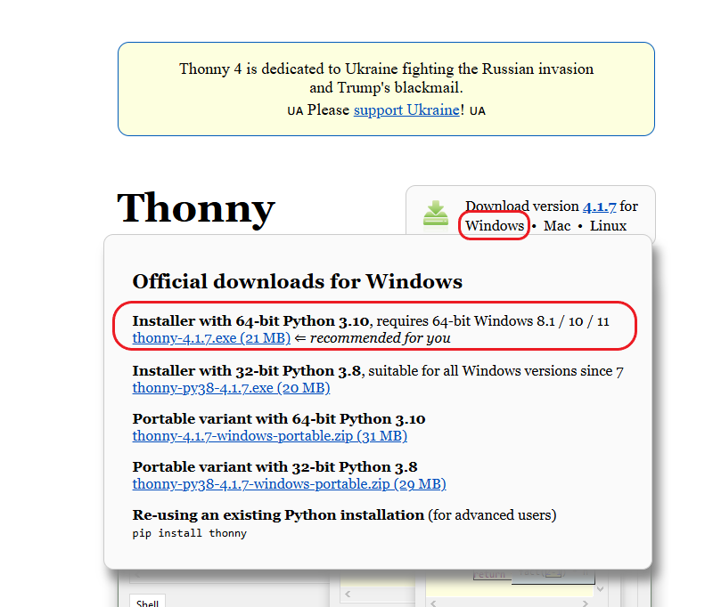

Curso de Python para la Industria
Lo que instalaremos hoy
⏱️ 10 minutos
⏱️ 10 minutos
⏱️ 5 minutos
Obteniendo el instalador oficial
📸 
Windows será detectado automáticamente
El archivo será: python-3.13.x-amd64.exe
El paso más crítico de todos
ANTES de instalar:
✅ MARCA LA CASILLA:
☑ Add Python 3.13 to PATH
Si no marcas esta casilla, Python no funcionará desde la terminal
Doble clic en el archivo descargado
¡No olvides la casilla!
Clic en "Install Now" (recomendado)
La instalación toma 2-5 minutos
Confirmando que todo funciona
Windows + R → cmd → Enter
python --version
pip --version
El editor profesional más popular

Stable Build recomendado
Se descargará: VSCodeUserSetup-x64-1.xx.x.exe
Tamaño aproximado: 90 MB
Configuración recomendada
Doble clic y aceptar licencia
Launch Visual Studio Code ✓
Habilitando el soporte para Python

O presiona Ctrl+Shift+X
En la barra de búsqueda escribe: Python
Clic en el botón Install
La extensión incluye:
Probando que todo funciona
En el escritorio, crear carpeta: CursoPython
File → Open Folder → Seleccionar CursoPython
File → New File → Guardar como: hola.py
print("¡Hola desde VS Code!")
print("Python Industrial en acción 🏭")
Presionar F5 o clic derecho → Run Python File
IDE perfecto para principiantes

Se descargará: thonny-x.x.x.exe
Tamaño: ~20 MB (muy ligero)
Proceso simple y rápido
Si Windows muestra advertencia: "More info" → "Run anyway"
Opción recomendada para uso personal
Aceptar ubicación predeterminada
Configuración inicial
Puedes elegir Español si lo prefieres
Selecciona Standard (recomendado)
# Escribe en la ventana principal:
print("¡Hola desde Thonny!")
temperatura = 25.5
print(f"Temperatura del sensor: {temperatura}°C")
Presiona el botón verde Run (▶) o F5
Confirmando todas las instalaciones
# Verificar Python
python --version
# Verificar pip
pip --version
# Verificar VS Code
code --version
# Instalar librerías del curso
pip install numpy pandas matplotlib
Las 3 situaciones más frecuentes
python -m pip install --upgrade pip¡Listos para programar! 🚀